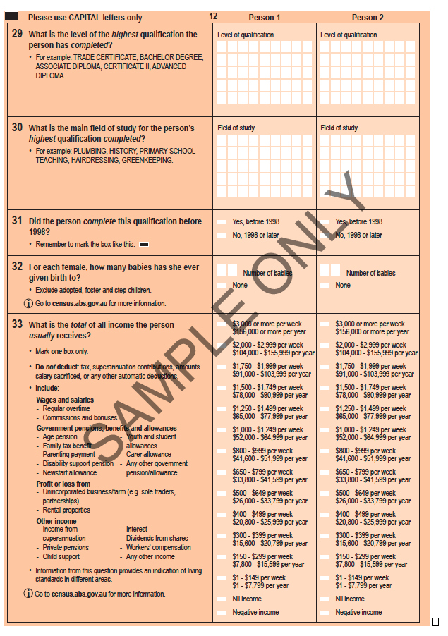
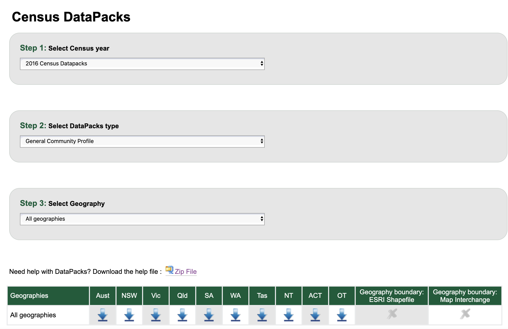
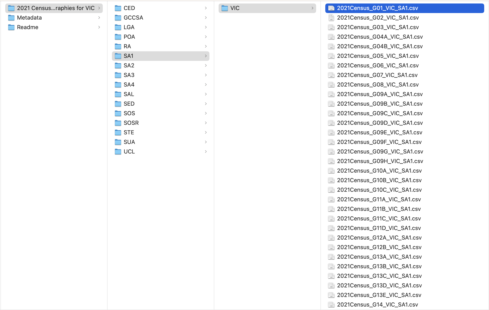

STE_CODE_2021 M_Neg_Nil_income_15_19_yrs M_Neg_Nil_income_20_24_yrs
1 2 88386 21186
ETC5512
Australian census
Lecturer: Kate Saunders
Department of Econometrics and Business Statistics
- ETC5512.Clayton-x@monash.edu
- Wild Caught Data
- wcd.numbat.space
Recall from lecture 2:
Realities of data collection
Collecting data on the entire population is normally too expensive or infeasible!
Therefore, we often can only collect data about a subset of the population.
Sample Advantages
- Reduces cost
- Timely collection of data
Census Advantages
- Data available, even for small geographical areas or subpopulations
- Statistics are not subject to sampling error
- Better accuracy and details
Sample Disadvantages
- Lack of data on sub-population (particularly minorities) or small geographical areas
- Requires careful construction of sampling design
- Estimates are subject to sampling error
- The estimates may not be accurate or reliable
- Estimating and communicating precision of estimates is difficult
Census Disadvantages
- Expensive or infeasible
- Time consuming to collect all data
Today’s Lecture
What we’ll cover
Case study data is on the Australian Census!
We will:
Learn about what the Australian census is and how the data is collected
Learn what data on population demographics are collected
Learn how the census data is stored and how to access it
From a coding perspective
Learn about organising your data the tidy data way.
Learn to manipulate strings and a bit about regular expressions.
Australian Census
What is the Australian census?
- The first Australian census was held in 1911.
- Since 1961, the census occurs every 5 years in Australia
- The next census is in 2026.
- Counts every person and household in Australia.
(well almost everyone, the 2021 census had a 96% participation rate but that is very high.) - Comprehensive snapshot of the country and tells the story of how we are changing.
- The Australia Bureau of Statistics (ABS) is legislated to collect and disseminate census data under the ABS Act 1975 and Census and Statistics Act 1905.
- For more details refer to the (ABS) Website.

What is the Australian Bureau of Statistics (ABS)?
- ABS is the independent statistical agency of the Government of Australia.
- If you are from outside Australia, find the statistical government agency in your country , e.g.
- in 🇯🇵 Japan, this is the Statistics Bureau of Japan,
- in 🇨🇳 China, the National Bureau of Statistics of China,
- in 🇮🇳 India, the Ministry of Statistics and Programme Implementation, and
- in 🇳🇿 New Zealand, the Statistics New Zealand.
- ABS provides key statistics on a wide range of economic, population, environmental and social issues, to assist and encourage informed decision making, research and discussion within governments and the community.
Why do we do a census?
- The census is not cheap to do. The 2021 census cost of $565 million. That’s roughly $22 per person.
- However the census provides value for money and it is important.
- An independent report found that for every
$1 invested in the Census,$6 of value is generated to the Australian economy. - The census data tells us about the economic, social and cultural make-up of the country.
- Need census data to make decisions and plan for the future
- It informs planning for schools, health care, transport and infrastructure. It is also used to help plan local services for individuals, families and communities.
How is the census conducted?
The ABS contacts households in a few different ways:
- Letters and paper forms are delivered in some areas
- In other areas, visits were made to households
- Answer online - That’s relatively new!
Then households complete the Census form, either submitting it online or sending it back in the mail.
ABS provides a range of supports and resources to help everyone to fill in the census.
Break out discussion
Take a moment to think about what challenges might arise if you try to survey everyone.
Hint: Think about smaller communities, their sub-groups and their different needs.
How can we survey everyone?
It is no small task!
Resources for people in the deaf/hard of hearing and blind/low vision communities
e.g. audio guides and braille information packsTo support Aboriginal and Torres Straight Islanders to fill in the census there are urban and regional pop-up hubs. This includes extra face-to-face support
For migrants, refugees, and international visitors there are language supports available.
Additional efforts are made to survey in locations to reach without a fixed address
e.g. FIFO workers (Fly in Fly Out), Grey Nomads, People experiencing homelessness.
- More details on the ABS website: here
What is in the census?
There are questions about:
- age
- country of birth
- religion
- ancestry
- language used at home
- work
- education
Breakout Session
Investigate what data is collected in the census.
Use the quick stats summary for Clayton here.
Are there any weird variables, or variables that surprise you? What do you learn about where you live?
Getting the ABS Census Data
https://www.abs.gov.au/census/find-census-data
Data
There are two main types of data that you can download:

Navigating ABS Census data
DataPacks are only available for the 2011, 2016 and 2021 census.
ABS aims for census data to be comparable and compatible with previous censuses.
Questions and classifications are reviewed to reflect changes in the Australian society.
e.g. In 2021, ABS did not to ask about home internet connection as people now have other options like mobile devices and that data was no longer considered relevant to society.There are small differences in the available data between years.
Variables can be added, updated and removed.There are also sometimes data corrections at a later date.
Here are links to:
(i) what’s new in 2021 - there were 56 new additions!
(ii) consultation for changes in 2026 and
(iii) an example of a 2026 proposed change
Data Structure and what’s in it?
Reality of any data analysis
Detective Work
Navigating data and deducing what it is often requires you to do some “detective work” 🕵️♀️
Much like real detective work, just locating the data and understanding the data variables can take a long time
Cleaning and wrangling of the data is not glamorous;
There’s far more attention in “catching criminals” / praise for the cool discoveries from statistical analysis.Let’s get delve into ‘grunt work’ of an analysis with the census data!
Datapack data structure

The data is nested within folders.
Click on the folder name to see folders and files nested within.Preserve the data in the original structure as much as you can!
Good practice not to modify the raw data and it’s structure
Read Me and Meta Data
Download the 2021 Census data containing the General Community Profile for all geographies in Victoria.
Before we jump in, we need some description or understanding of the variables.
It will be near impossible to extract meaningful information from the data without it.
Break out
Breakout Session
Then take some time to review the read me and the meta data folders.
Which folder contains demographic information about each suburb?
What is LGA short for?
Where can I find information about how much rent people pay?
What is contained in variable G17?
Table G17
A few things to note:
There are 201 columns in G17A and G17B and 81 columns in G17C.
Perhaps there is an export limitation for a data that contains more than 200 columns, thus it is broken up into different csv files.
Which means that you have to join the tables G17A, G17B and G17C as one
(you’ll do this in the tutorial ).
Question
But what does the data look like when you open the file?
Tables G17A-G17C
2021Census_G17A_VIC_STE.csv
2021Census_G17B_VIC_STE.csv
STE_CODE_2021 F_300_399_15_19_yrs F_300_399_20_24_yrs
1 2 8810 195372021Census_G17C_VIC_STE.csv
STE_CODE_2021 P_650_799_15_19_yrs P_650_799_20_24_yrs
1 2 7670 45029Tidy Data
What is Tidy Data?
Tidy Data Principles 1
- Each variable must have its own column
- Each observation must have its own row
- Each value must have its own cell
So what about the ABS Census Data?
- The table header in fact contains information!
- E.g.
F_400_499_15_19_yrsis female aged 15-19 years old who earn $400-499 per week (in Victoria). - The number in the cells are the counts.
- Is the data tidy?
Tidying the ABS 2021 Census Data
- Ideally we want the data to look like:
age_min age_max gender income_min income_max count
1 15 19 female 400 499 4020Putting data into a tidy format makes the data analysis easier.
You can include other information, e.g. geography code (useful if combining with other geographical area) or average age/income.
Note some categories do not have upper bounds, e.g.
M_3000_more_85ov. In R,-InfandInfare used to represent \(-\infty\) and \(\infty\), respectively.You’ll wrangle the data into the tidy form in tutorial
This will require getting the pieces of information from the column names and organising them using string manipulation.
Manipulating strings
Manipulating strings
- The
stringr1 package provides a set of functions designed to help with string manipulation.
Main functions in
stringrbegin with the prefix withstr_and the first input into the functions is a string (or a vector of strings)What do you think
str_trimandstr_squishdo?
- Click here for a cheat sheet for
stringrfunctions.
Some other examples
These are stringr functions we’ll need for our census application.
Splitting strings by a pattern:
[[1]]
[1] "Hi" "everyone" "in" "ETC5512" Replacing parts of strings with a different pattern:
Deleting parts of strings that aren’t imporant:
[1] "we_want_stuff"To get more control over the kinds of patterns we can match, we need regular expressions.
Regular expressions Part 1
- Regular expression, or regex, is a string of characters that define a search pattern for text
- Regular expression is… hard, but comes up often enough that it’s worth learning
Basic match
Regular expressions Part 2
Meta-characters
"."a wildcard to match any character except a new line
"(.|.)"a marked subexpression with alternate possibilites marked with|
Regular expressions Part 3
Meta-character quantifiers
"?"zero or one occurence of preceding element
"*"zero or more occurence of preceding element
Regular expressions Part 4
"{n}"preceding element is matched exactlyntimes
[1] "-" "-na" "bana" "-nana""{min,}"preceding element is matchedmintimes or more
Regular expressions Part 5
Character classes
[:alpha:]or[A-Za-z]to match alphabetic characters[:alnum:]or[A-Za-z0-9]to match alphanumeric characters[:digit:]or[0-9]or\\dto match a digit[^0-9]to match non-digits
[a-c]to match a, b or c[A-Z]to match uppercase letters[a-z]to match lowercase letters[:space:]or[ \t\r\n\v\f]to match whitespace characters- and more…
View matches with regular expressions
[1] │ <banana>
[2] │ <banana>na
[3] │ <bana>
[4] │ <bana><banana>[1] │ <banana>
[2] │ <banana>na
[3] │ <bana>
[4] │ <bana><banana>Tip
- When a function in
stringrends with_all, all matches of the pattern are considered - The one without
_allonly considers the first match
Weird characters
Characters we use to define the regex, e.g. *,.,!,?,),] need to be defined differently when we are trying to match them.
This doesn’t work:
[1] "L"[1] │ <L><e><t>'<s> <g><e><t> <t><h><e> <c><h><a><r><a><c><t><e><r> <a><n><d> <t><h><e> <b><r><a><c><k><e><t><s> (<A>)But this does.
To match a bracket ( we need to use \\( in stringr. It tells R we are looking for the bracket as part of the pattern and not to look for the backslash. The same goes for other special characters:
Back to Census
Raw Data vs. Aggregated Data
- Although the data collected was from individual households, with each person in the household surveyed (see sample form here), the downloaded data are aggregated.
- Aggregate data presents summary statistics from the raw data. (e.g. a common summary statistic is the mean).
- When the summary statistics are counts then it is often called frequency data.
- The raw data collected would be similar to the form
What you lose in aggregate data
- For aggregate data, there are less scope for you to draw insights conditioned on other variables.
- e.g. Based on frequency data alone, you cannot answer questions like: How many middle income families have 2 children?
- Raw data are desirable if you can get hold of it!
Trust and skepticism
- By the way, did you notice anything odd about the dummy data presented in the last slide?
- John Smith was recorded as female and Jane Smith as male. Data may have been incorrectly recorded.
- How much do you trust the aggregate data?
- Remember to have a healthy dose of skepticism in your data.
Data Confidentiality
- The data is not just aggregated, but it is also anonymised
- E.g. in
2021_GCP_Sequential_Template_R2.xlsx, Sheet “G17”, footnote says “Please note that there are small random adjustments made to all cell values to protect the confidentiality of data. These adjustments may cause the sum of rows or columns to differ by small amounts from table totals.”
Curious
Do you think that you’ll get the same numbers if you aggregate different geographical regions? E.g. SA1 and STE.
- You can check this in the tutorial 🔧
Wrap UP
Summary
Australian Census Case Study
We went through how to find and understand the data available in the 2021 Australian census.
Learnt about census data collection and data limitations.
Taste of detective work: Understanding the file structures and what the data contains.
Also learnt about tidy data
Covered the basics of string manipulation
Answers
Break out questions
Which folder contains demographic information about each suburb?
In the file2021AboutDataPacks_readme.txtyou find out that folders represent different geographical sub-regions. SAL represents suburbs and locaties and in the previous census this was called SSC.What is LGA short for?
Local Government AreasWhere can I find information about how much rent people pay?
In the file 2021_GCP_Sequential_Template_R2 there is a list of variables and what is contained in each table. G40 contains the rental information (organised by landlord type).
- What is contained in variable G17?
G17 contains information about the total personal income organised by age and sex.
More String Manipulation
Case study Aussie Local Government Area 1
[1] "Broken Hill (C)" "Waroona (S)" "Toowoomba (R)" "West Arthur (S)"
[5] "Moreton Bay (R)" "Etheridge (S)" "Cleve (DC)" | C = Cities | A = Areas | RC = Rural Cities |
| B = Boroughs | S = Shires | DC = District Councils |
| M = Municipalities | T = Towns | AC = Aboriginal Councils |
| RegC = Regional Councils |
🎯 Extract the LGA status from the LGA names
Extracting the string
[1] "(C)" "(S)" "(R)" "(S)" "(R)"
[6] "(S)" "(DC)" "(R)" "(DC)" "(C)"
[11] "(DC)" "(S)" "(S)" "(S)" "(DC)"
[16] "(A)" "(C)" "(A)" "(T)" "(RC)"
[21] "(A)" "(S)" "(S)" "(S)" "(C)"
[26] "(DC)" "(R)" "(A)" "(C)" "(DC)"
[31] "(S)" "(S)" "(A)" "(S)" "(S)"
[36] "(R)" "(M)" "(A)" "(C)" "(S)"
[41] "(S)" "(C)" "(A)" "(S)" "(C)"
[46] "(AC)" "(A)" "(S)" "(A)" "(C)"
[51] "(A)" "(R)" "(S)" "(T)" "(C)"
[56] "(S)" "(S)" "(R)" "(C)" "(T)"
[61] "(C)" "(S)" "(C)" "(C)" "(C)"
[66] "(C)" "(S)" "(DC)" "(DC)" "(S)"
[71] "(R)" "(R)" "(S)" "(B)" "(DC)"
[76] "(M)" "(A)" "(C)" "(S)" "(S)"
[81] "(S)" "(S)" "(S)" "(S)" "(S)"
[86] "(C)" "(A)" "(C)" "(A)" "(S)"
[91] "(C)" "(A)" "(S)" "(S)" "(S)"
[96] "(S)" "(DC)" "(S)" "(S)" "(S)"
[101] "(C)" "(C)" "(DC)" "(S)" "(S)"
[106] "(C)" "(S)" "(DC)" "(C)" "(C)"
[111] "(S)" "(S)" "(S)" "(S)" "(S)"
[116] "(S)" "(A)" "(DC)" "(S)" "(A)"
[121] "(C)" "(A)" "(S)" "(A)" "(DC)"
[126] "(S)" "(C)" "(S)" "(A)" "(S)"
[131] "(M)" "(S)" "(DC)" "(R)" "(C)"
[136] "(C)" "(S)" "(C)" "(S)" "(T)"
[141] "(S)" "(S)" "(DC)" "(S)" "(T)"
[146] "(C)" "(S)" "(M)" "(S)" "(DC)"
[151] "(C)" "(S)" "(M)" "(C)" "(S)"
[156] "(C)" "(C)" "(R)" "(S)" "(C)"
[161] "(C)" "(R)" "(S)" "(C)" "(A)"
[166] "(T)" "(S)" "(RC)" "(C)" "(A)"
[171] "(A)" "(A)" "(S)" "(A)" "(S)"
[176] "(S)" "(T)" "(S)" "(S)" "(S)"
[181] "(A)" "(DC)" "(M)" "(C)" "(S)"
[186] "(A)" "(T)" "(A)" "(C)" "(S)"
[191] "(C)" "(R)" "(C)" "(S)" "(S)"
[196] "(S)" "(S)" "(R)" "(C)" "(DC)"
[201] "(A)" "(DC)" "(R)" "(C)" "(S)"
[206] "(S)" "(C)" "(C)" "(R)" "(S)"
[211] "(S)" "(C)" "(A)" "(S)" "(S)"
[216] "(C)" "(DC)" "(S)" "(M) (Tas.)" "(M) (Tas.)"
[221] "(C) (Vic.)" "(C) (Vic.)" "(S)" "(DC)" "(S)"
[226] "(RC)" "(S)" "(DC)" "(S)" "(S)"
[231] "(R)" "(S)" "(A)" "(C)" "(C)"
[236] "(A)" "(A)" "(RC)" "(S)" "(C)"
[241] "(S)" "(S)" "(S)" "(C)" "(C)"
[246] "(S)" "(C)" "(C)" "(C)" "(A)"
[251] "(C)" "(S)" "(S)" "(S)" "(S)"
[256] "(S)" "(A)" "(A)" "(A)" "(S)"
[261] "(A)" "(A)" "(S)" "(S)" "(C)"
[266] "(A)" "(M)" "(S)" "(S)" "(C)"
[271] "(R)" "(S)" "(R)" "(DC)" "(R)"
[276] "(C)" "(S)" "(S)" "(C)" "(S)"
[281] "(A)" "(R)" "(DC)" "(A)" "(C)"
[286] "(A)" "(S)" "(S)" "(A)" "(C)"
[291] "(C)" "(A)" "(T)" "(S)" "(C)"
[296] "(A)" "(A)" "(S)" "(S)" "(T)"
[301] "(C)" "(A)" "(A)" "(DC)" "(A)"
[306] "(C)" "(M)" "(M)" "(S)" "(A)"
[311] "(A)" "(C)" "(C)" "(S)" "(DC)"
[316] "(S)" "(C)" "(S)" "(S)" "(DC)"
[321] "(RegC)" "(C)" "(S)" "(S)" NA
[326] "(A)" "(S)" "(A)" "(S)" "(A)"
[331] "(S)" "(C)" "(R)" "(C)" "(S)"
[336] "(A)" "(DC)" "(S)" "(A)" "(R)"
[341] "(S)" "(S)" "(RC)" "(T)" "(A)"
[346] "(M)" "(A)" "(S)" "(S)" "(S)"
[351] "(S)" "(A)" "(RC)" "(S)" "(A)"
[356] "(R)" "(S)" "(S)" "(C)" "(S)"
[361] "(DC)" "(M)" "(M)" "(AC)" "(DC)"
[366] "(A)" "(A)" "(S)" "(S)" "(A)"
[371] "(C)" "(S)" "(S)" "(C)" "(R)"
[376] "(S)" "(S)" NA "(A)" "(T)"
[381] "(S)" "(A)" "(C)" "(C)" "(A)"
[386] "(C)" "(DC)" "(C)" "(A)" "(A)"
[391] "(A)" "(S)" "(DC)" "(DC)" "(S)"
[396] "(M)" "(R)" "(DC)" "(C)" "(S)"
[401] "(S)" "(C)" "(C)" "(C)" "(C)"
[406] "(C)" "(S)" "(A)" NA "(S)"
[411] "(C)" "(S)" "(M)" "(C)" "(S)"
[416] "(S)" NA "(C)" "(S)" "(C)"
[421] "(DC)" "(S)" "(C)" "(S)" "(C)"
[426] "(M)" "(A)" "(A)" "(A)" "(S)"
[431] "(C)" "(S)" "(S)" "(S)" "(A)"
[436] "(A)" "(A)" "(S)" "(S)" "(S)"
[441] "(C)" "(S)" "(C)" "(C)" "(C)"
[446] "(C) (NSW)" "(S) (Qld)" "(R) (Qld)" "(DC) (SA)" "(C) (SA)"
[451] "(M) (Tas.)" "(M) (Tas.)" "(C)" "(R)" "(M)"
[456] "(C)" "(R)" "(S)" "(RC)" "(S)"
[461] "(M)" "(C)" "(R)" "(C)" "(DC)"
[466] "(C)" "(C)" "(M)" "(C)" "(S)"
[471] "(C)" "(DC)" "(M)" "(S)" "(C)"
[476] "(C)" "(A)" "(DC)" "(R)" "(C)"
[481] "(C)" "(A)" "(M)" "(C)" "(C)"
[486] "(S)" "(S)" "(S)" "(A)" "(R)"
[491] "(M)" "(A)" "(R)" "(A)" "(A)"
[496] "(R)" "(R)" "(R)" "(S)" "(C)"
[501] "(C)" "(S)" "(A)" "(S)" "(M)"
[506] "(M)" "(S)" "(A)" "(A)" "(S)"
[511] "(A)" "(C)" "(DC)" "(S)" "(S)"
[516] NA "(A)" NA "(R)" "(C)"
[521] "(S)" "(C)" "(S)" "(A)" "(A)"
[526] "(A)" "(A)" "(C)" "(A)" "(A)"
[531] "(A)" "(A)" "(C) (NSW)" "(A)" "(C)"
[536] "(R)" "(S)" "(A)" "(R)" "(C)"
[541] "(A)" "(S)" "(A)" "(A)" Important
- What is
"\\(.+\\)"??? - This is a pattern expressed as regular expression or regex for short
- Note in R, you have to add an extra
\when\is included in the pattern _(yes this means that you can have a lot of backslashes… just keep adding\until it works! Enjoy this xkcd comic - From R v4.0.0 onwards, you can use raw string to elimiate all the extra
\, e.g.(\(.+\)is the same as\\(.+\\)
Back to Extracting the string
[1] "(C)" "(S)" "(R)" "(S)" "(R)"
[6] "(S)" "(DC)" "(R)" "(DC)" "(C)"
[11] "(DC)" "(S)" "(S)" "(S)" "(DC)"
[16] "(A)" "(C)" "(A)" "(T)" "(RC)"
[21] "(A)" "(S)" "(S)" "(S)" "(C)"
[26] "(DC)" "(R)" "(A)" "(C)" "(DC)"
[31] "(S)" "(S)" "(A)" "(S)" "(S)"
[36] "(R)" "(M)" "(A)" "(C)" "(S)"
[41] "(S)" "(C)" "(A)" "(S)" "(C)"
[46] "(AC)" "(A)" "(S)" "(A)" "(C)"
[51] "(A)" "(R)" "(S)" "(T)" "(C)"
[56] "(S)" "(S)" "(R)" "(C)" "(T)"
[61] "(C)" "(S)" "(C)" "(C)" "(C)"
[66] "(C)" "(S)" "(DC)" "(DC)" "(S)"
[71] "(R)" "(R)" "(S)" "(B)" "(DC)"
[76] "(M)" "(A)" "(C)" "(S)" "(S)"
[81] "(S)" "(S)" "(S)" "(S)" "(S)"
[86] "(C)" "(A)" "(C)" "(A)" "(S)"
[91] "(C)" "(A)" "(S)" "(S)" "(S)"
[96] "(S)" "(DC)" "(S)" "(S)" "(S)"
[101] "(C)" "(C)" "(DC)" "(S)" "(S)"
[106] "(C)" "(S)" "(DC)" "(C)" "(C)"
[111] "(S)" "(S)" "(S)" "(S)" "(S)"
[116] "(S)" "(A)" "(DC)" "(S)" "(A)"
[121] "(C)" "(A)" "(S)" "(A)" "(DC)"
[126] "(S)" "(C)" "(S)" "(A)" "(S)"
[131] "(M)" "(S)" "(DC)" "(R)" "(C)"
[136] "(C)" "(S)" "(C)" "(S)" "(T)"
[141] "(S)" "(S)" "(DC)" "(S)" "(T)"
[146] "(C)" "(S)" "(M)" "(S)" "(DC)"
[151] "(C)" "(S)" "(M)" "(C)" "(S)"
[156] "(C)" "(C)" "(R)" "(S)" "(C)"
[161] "(C)" "(R)" "(S)" "(C)" "(A)"
[166] "(T)" "(S)" "(RC)" "(C)" "(A)"
[171] "(A)" "(A)" "(S)" "(A)" "(S)"
[176] "(S)" "(T)" "(S)" "(S)" "(S)"
[181] "(A)" "(DC)" "(M)" "(C)" "(S)"
[186] "(A)" "(T)" "(A)" "(C)" "(S)"
[191] "(C)" "(R)" "(C)" "(S)" "(S)"
[196] "(S)" "(S)" "(R)" "(C)" "(DC)"
[201] "(A)" "(DC)" "(R)" "(C)" "(S)"
[206] "(S)" "(C)" "(C)" "(R)" "(S)"
[211] "(S)" "(C)" "(A)" "(S)" "(S)"
[216] "(C)" "(DC)" "(S)" "(M) (Tas.)" "(M) (Tas.)"
[221] "(C) (Vic.)" "(C) (Vic.)" "(S)" "(DC)" "(S)"
[226] "(RC)" "(S)" "(DC)" "(S)" "(S)"
[231] "(R)" "(S)" "(A)" "(C)" "(C)"
[236] "(A)" "(A)" "(RC)" "(S)" "(C)"
[241] "(S)" "(S)" "(S)" "(C)" "(C)"
[246] "(S)" "(C)" "(C)" "(C)" "(A)"
[251] "(C)" "(S)" "(S)" "(S)" "(S)"
[256] "(S)" "(A)" "(A)" "(A)" "(S)"
[261] "(A)" "(A)" "(S)" "(S)" "(C)"
[266] "(A)" "(M)" "(S)" "(S)" "(C)"
[271] "(R)" "(S)" "(R)" "(DC)" "(R)"
[276] "(C)" "(S)" "(S)" "(C)" "(S)"
[281] "(A)" "(R)" "(DC)" "(A)" "(C)"
[286] "(A)" "(S)" "(S)" "(A)" "(C)"
[291] "(C)" "(A)" "(T)" "(S)" "(C)"
[296] "(A)" "(A)" "(S)" "(S)" "(T)"
[301] "(C)" "(A)" "(A)" "(DC)" "(A)"
[306] "(C)" "(M)" "(M)" "(S)" "(A)"
[311] "(A)" "(C)" "(C)" "(S)" "(DC)"
[316] "(S)" "(C)" "(S)" "(S)" "(DC)"
[321] "(RegC)" "(C)" "(S)" "(S)" NA
[326] "(A)" "(S)" "(A)" "(S)" "(A)"
[331] "(S)" "(C)" "(R)" "(C)" "(S)"
[336] "(A)" "(DC)" "(S)" "(A)" "(R)"
[341] "(S)" "(S)" "(RC)" "(T)" "(A)"
[346] "(M)" "(A)" "(S)" "(S)" "(S)"
[351] "(S)" "(A)" "(RC)" "(S)" "(A)"
[356] "(R)" "(S)" "(S)" "(C)" "(S)"
[361] "(DC)" "(M)" "(M)" "(AC)" "(DC)"
[366] "(A)" "(A)" "(S)" "(S)" "(A)"
[371] "(C)" "(S)" "(S)" "(C)" "(R)"
[376] "(S)" "(S)" NA "(A)" "(T)"
[381] "(S)" "(A)" "(C)" "(C)" "(A)"
[386] "(C)" "(DC)" "(C)" "(A)" "(A)"
[391] "(A)" "(S)" "(DC)" "(DC)" "(S)"
[396] "(M)" "(R)" "(DC)" "(C)" "(S)"
[401] "(S)" "(C)" "(C)" "(C)" "(C)"
[406] "(C)" "(S)" "(A)" NA "(S)"
[411] "(C)" "(S)" "(M)" "(C)" "(S)"
[416] "(S)" NA "(C)" "(S)" "(C)"
[421] "(DC)" "(S)" "(C)" "(S)" "(C)"
[426] "(M)" "(A)" "(A)" "(A)" "(S)"
[431] "(C)" "(S)" "(S)" "(S)" "(A)"
[436] "(A)" "(A)" "(S)" "(S)" "(S)"
[441] "(C)" "(S)" "(C)" "(C)" "(C)"
[446] "(C) (NSW)" "(S) (Qld)" "(R) (Qld)" "(DC) (SA)" "(C) (SA)"
[451] "(M) (Tas.)" "(M) (Tas.)" "(C)" "(R)" "(M)"
[456] "(C)" "(R)" "(S)" "(RC)" "(S)"
[461] "(M)" "(C)" "(R)" "(C)" "(DC)"
[466] "(C)" "(C)" "(M)" "(C)" "(S)"
[471] "(C)" "(DC)" "(M)" "(S)" "(C)"
[476] "(C)" "(A)" "(DC)" "(R)" "(C)"
[481] "(C)" "(A)" "(M)" "(C)" "(C)"
[486] "(S)" "(S)" "(S)" "(A)" "(R)"
[491] "(M)" "(A)" "(R)" "(A)" "(A)"
[496] "(R)" "(R)" "(R)" "(S)" "(C)"
[501] "(C)" "(S)" "(A)" "(S)" "(M)"
[506] "(M)" "(S)" "(A)" "(A)" "(S)"
[511] "(A)" "(C)" "(DC)" "(S)" "(S)"
[516] NA "(A)" NA "(R)" "(C)"
[521] "(S)" "(C)" "(S)" "(A)" "(A)"
[526] "(A)" "(A)" "(C)" "(A)" "(A)"
[531] "(A)" "(A)" "(C) (NSW)" "(A)" "(C)"
[536] "(R)" "(S)" "(A)" "(R)" "(C)"
[541] "(A)" "(S)" "(A)" "(A)" Back to Extracting the string
(A) (AC) (B) (C) (C) (NSW) (C) (SA) (C) (Vic.)
100 2 1 120 2 1 2
(DC) (DC) (SA) (M) (M) (Tas.) (R) (R) (Qld) (RC)
40 1 23 4 38 1 7
(RegC) (S) (S) (Qld) (T)
1 182 1 12 Where the same Local Government Area name appears in different States or Territories, the State or Territory abbreviation appears in parenthesis after the name. Local Government Area names are therefore unique.
-Australian Bureau of Statistics
Retry Extracting the string
Retry Extracting the string
A AC B C DC M R RC RegC S T
100 2 1 125 41 27 39 7 1 183 12 "[]"for single character match- We want to match
(and)but these are meta-characters - So we need to escape it to have it as a literal:
\(and\) - But we must escape the escape character… so it’s actually
\\(\\)
Extracting the string in R>=4.0.0
str_extract(LGA, r"(\([^)]+\))") %>%
# remove the brackets
str_replace_all(r"([\(\)])", "") %>%
table()
## .
## A AC B C DC M R RC RegC S T
## 100 2 1 125 41 27 39 7 1 183 12
- If using R v4.0.0 onwards, you can use the raw string version instead

ETC5512